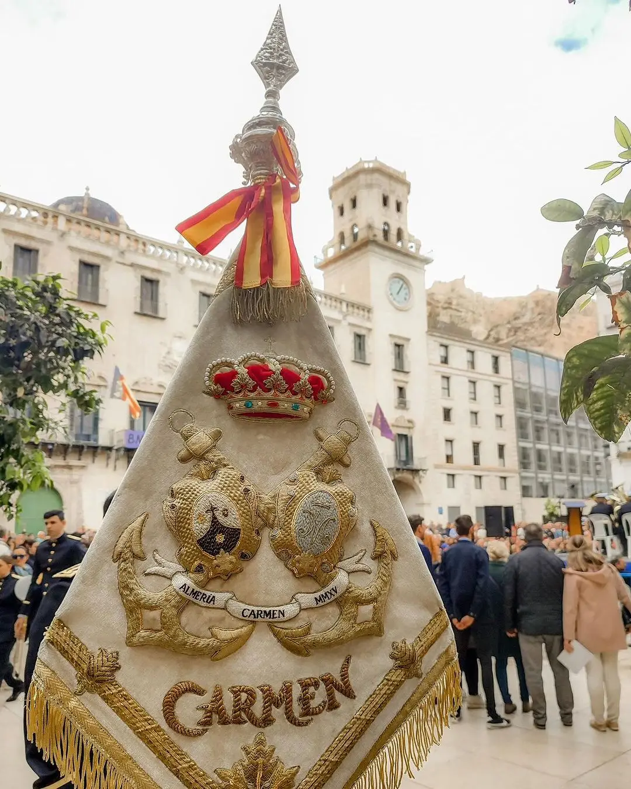
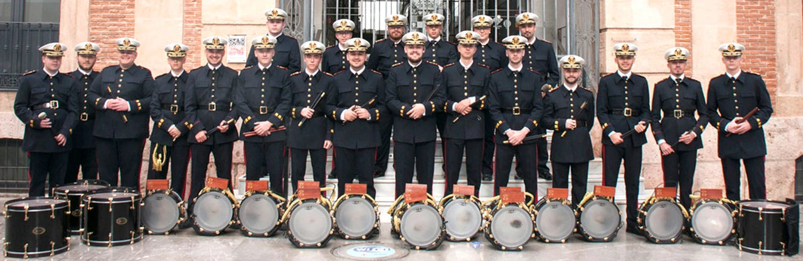

BANDERÍN
- Banderín bordado a mano en hilo de oro fino sobre terciopelo blanco crudo realizado en los talleres de Gabriel Martín Gázquez entre los años 2016 y 2017.
UNIFORME DE GALA
Basado en el uniforme de gala de la Infantería de Marina española que incorpora la gorra de plato blanca con detalles en oro, cinturón negro y detalles en chaqueta y pantalón que alterna el rojo y dorado.
UNIFORME DE VERANO
El uniforme de verano está compuesto de camisa blanca con detalles en color burdeos y pantalón negro lisa.